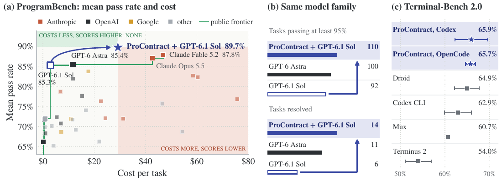

Abstract
Two problems now limit long-horizon AI agents: they stop early and leave solvable work undone, and their harnesses cannot be changed safely, by developers or by the agents themselves. Both have one cause: the harness that works on a task also holds what is owed and decides when it is done. An agent's “done” therefore measures its method, not the task. Given six hours to rebuild a program, Codex, in its mode built for long tasks, declares 197 of 200 tasks complete after a median of 36 minutes, and one program passes every hidden test. The decision fails in two ways: in progress misjudgment the agent takes a passing check of its own for completion, and in responsibility dilution it narrows the task to what its method covers; 62 of the 197 completion messages name a gap and declare the task complete. The model is not the limit: one model stops after a median of 24, 36, or 90 minutes under three harnesses, and when its “done” is refused the same agent keeps finding and fixing failures for five more hours. But nothing then protects the task, and it begins to rewrite its goal into a narrower one; and when agents rewrite their own harness, each rewrite can change what is owed.
ProContract takes the task out of the harness. A small deterministic kernel holds each task's Contract and records progress only when an independent verifier accepts the exact work submitted; what is owed and what was accepted are the same under every version of the harness, including versions the agent writes. The harness thereby becomes evolvable: a run that stops with its task open exposes a defect of the harness, and revisions are decided by controls on the failing inputs, not by benchmark scores; over two rounds the share of runs that stop early at such a defect falls from 40% to 4%. Built on Codex, ProContract scores 5.07 points above Codex on the same model and executable, and with GPT-6.1 Sol it sets the state of the art in mean pass rate on ProgramBench, 89.70%, at 62% of the best public entry's cost.
An agent's “done” measures its method, not the task
Given six hours to rebuild a program from an executable it can run but whose tests it never sees, Codex in its persistent /goal mode stops long before the allowance ends. The model is not the limit: the same model stops at a different time under each harness.
/goalProgress misjudgment
The agent takes a passing check of its own for completion. All 197 completion messages cite a successful rebuild; whether a message claims a comparison with the reference is uncorrelated with its score.
“…all 69 differential cases matched the reference.”
Responsibility dilution
The task shrinks to what the method covers. In 62 of the 197 messages the agent names a gap and marks the goal complete in the same message. Forced to continue, it rewrites its goal into a narrower one in 5 of 32 runs.
“This implements a broad subset of PHP, not the complete language.”

One task under ProContract
A Contract holds the responsibility, what the agent owes, and its progress, what has been accepted as meeting it. Only a small deterministic kernel may update it, and only on a request from the role that request belongs to. Everything else is harness, and the harness can be replaced.
The Contract is issued. The task text is kept verbatim.
Candidate x: the workspace, frozen.
x is defeated. The counterexample is kept.
Unchanged: the same requirements, the same record.
y has Support: a judgment of this exact artifact.
y. The verifier gives evidence for each requirement.Closed on the current Support. A later counterexample reopens it.
The task stays open
The worker's “done” is a submission, not a completion. Its own checks guide the work; they never record progress.
The task is out of reach
Progress enters only when an independent verifier judges an exact artifact and the kernel finds that judgment authorized and current. The worker cannot edit what is owed.
The task holds across versions
What is owed and what was accepted are the same under every version of the harness, including versions the agent writes.
The same task under Codex and under ProContract
Three tasks from the 200-task comparison below, chosen because the verifier's findings are short enough to read: the same model, GPT-6 Luna, and the same six hours. Every marker is an event recorded in the run, and the words are the agents' and the verifier's own. Hidden tests are run after a run ends; no agent sees them.
What the kernel preserves
The kernel runs no model, knows nothing of programs or benchmarks, and makes no judgment of its own. It receives requests, checks who sent each and what it names, and either applies it or leaves the Contract as it was. Its transition function is 271 lines of Rust.
One role for each request
The user states what is owed, the worker submits, the verifier judges. A worker that sends a judgment or a settlement is rejected, and the Contract is unchanged.
A judgment names exact work
Support binds the Contract, its requirements and one frozen artifact by hash. Change the artifact, or the requirements, and the judgment no longer applies.
Support is not settlement
Support is one verifier's judgment of one artifact. Closing the task is a separate request, and on evidence the worker could have read, only the user's explicit act settles it.
A counterexample returns the task to work
A Defeat removes the candidate and leaves the Contract outstanding. The generation rises with every submission and every Defeat, so an old judgment cannot land on a later artifact.
Replacing the harness changes nothing owed
Requirements and recorded judgments stay in place when the harness is restarted, replaced, or rewritten by the agent. A replacement can break only the harness's own execution state.
An acceptance can lose its basis
A fulfilled task is not closed for ever. A counterexample after settlement, or the withdrawal of the judgment it rests on, reopens the task.
| Request | Only from | The kernel checks | The Contract afterwards |
|---|---|---|---|
Issue | issuer (the user) | the Contract is new | outstanding; requirements bound by hash |
Propose | executor (the worker) | the Contract is outstanding | the frozen artifact is the candidate; any earlier Support is gone |
Support | verifier | it names this Contract, its current requirements and the current candidate | Support recorded; still outstanding |
Defeat | verifier | it names the exact current candidate | candidate removed; outstanding |
Withdraw | verifier | it names the current Support or settlement | judgment removed, artifact kept; outstanding |
Discharge | settler (the user, or a rule the user fixed) | the Support is current; evidence within the worker's reach needs the user's explicit act | fulfilled |
Challenge | settler | it names the current candidate or settlement | reopened: outstanding |
Release | settler | the Contract is outstanding | released |
Revise | issuer, a human act | the Contract is outstanding | new requirements; candidate and Support cleared |
| anything else | the worker's “done”, its own checks, resting, running out of budget, being replaced, editing files | nothing to record; unchanged | |
Higher with every model, and first on ProgramBench
Built on Codex and compared with baselines that run the same model under the same six hours. With one executable and one model, GPT-6 Luna, switching ProContract on raises the mean hidden-test pass rate from 71.22% to 76.28%: 5.07 points, 95% interval [3.70, 6.54], higher on 154 of 200 tasks.
/goal on the same model and executable| Model | Baseline | Baseline (%) | ProContract (%) | Gain [95% interval] |
|---|---|---|---|---|
| Controlled: the same model, six hours, unlimited requests | ||||
| GPT-6 Luna | Codex /goal, same executable | 71.22 | 76.28 | +5.07 [3.70, 6.54] |
| GPT-6 Luna | Codex /goal, stock release | 71.20 | 76.28 | +5.09 [3.78, 6.45] |
| GPT-6 Luna | Recursive Language Models | 68.56 | 76.28 | +7.73 [5.84, 9.75] |
| Public leaderboard entry of the same model | ||||
| GPT-6.1 Sol | mini-SWE-agent, public | 85.25 | 89.70 | +4.45 [2.37, 6.75] |
| GPT-5.6 Luna | mini-SWE-agent, public | 68.29 | 76.20 | +7.91 [5.46, 10.59] |


Where the gain comes from. The gain comes from keeping the task open, not from feedback. Refusing the worker's “done” with one fixed sentence scores higher than plain /goal on 26 of 30 tasks, but that loop cannot hold the task: no run can close, and the worker rewrites its goal. Under ProContract no run changes its task, and a run can end on a judgment other than the worker's.

The harness becomes evolvable
Because the kernel's guarantee holds for any harness, every part of the harness is free to change. Improving it is one more responsibility for the same kernel to hold: a revision is a candidate under its own Contract, and the harness under improvement never judges itself.
- A run exposes a defectA run that stops with its task open shows where the harness has to change.
- Terms come firstWhat a revision must show is bound into a Contract before any candidate exists.
- An agent writes a revisionThe source of a new version, submitted as a frozen artifact.
- It is judged like any artifactBy controls on the failing inputs that separate the old version from the new, not by benchmark scores.
- Adoption is a separate actAn authority outside the agent, the user or a rule the user fixed, makes it the version that serves later tasks.
Tinted steps are recorded by the kernel. Later runs expose the next defect, and if an evaluation loses its basis the adoption is reopened like any other acceptance.


The kernel on your machine, in a few seconds
The quickstart builds one binary and runs one task under the kernel: no model, no container and, after the build, no network. This is part of what it prints.
$ (cd codex-rs && cargo build --locked -p codex-pro-contract-store --bin pro-contract-store) $ export PRO_CONTRACT_STORE_BIN="$PWD/codex-rs/target/debug/pro-contract-store" $ cd scripts && python3 examples/procontract_quickstart.py (a) One task under the kernel 2. the worker proposes a candidate (its captured workspace) standing=outstanding version=2 generation=1 candidate=f61e3f3af9 support=none 3. the worker reports "done" the report is text: no kernel command carries it, and a worker's only command is Propose the worker sends Support of its own candidate: Rejected(WrongRole { command: Support, required: Verifier, actual: Executor }) the worker sends Discharge of the Contract: Rejected(WrongRole { command: Discharge, required: Settler, actual: Executor }) standing=outstanding version=2 generation=1 candidate=f61e3f3af9 support=none (unchanged) 4. the verifier checks the frozen candidate and records a Defeat counterexample: median([1, 2, 3, 4]) returned 3, expected 2.5 standing=outstanding version=3 generation=2 candidate=none support=none 5. the worker proposes a repaired candidate standing=outstanding version=4 generation=3 candidate=3cc22711b1 support=none 6. the verifier checks the frozen candidate and records Support checks passed: 4 of 4 standing=outstanding version=5 generation=3 candidate=3cc22711b1 support=reach within
Citation
@article{zhou2026procontract,
title = {ProContract: Decoupling Responsibility and Progress from an Evolvable Harness},
author = {Zhou, Duo and Qiu, Ruizhong and Zhang, Yuji and Jin, Kaifeng and Tong, Hanghang and Zhang, Eddie and Bai, Jerry},
year = {2026},
note = {Preprint}
}